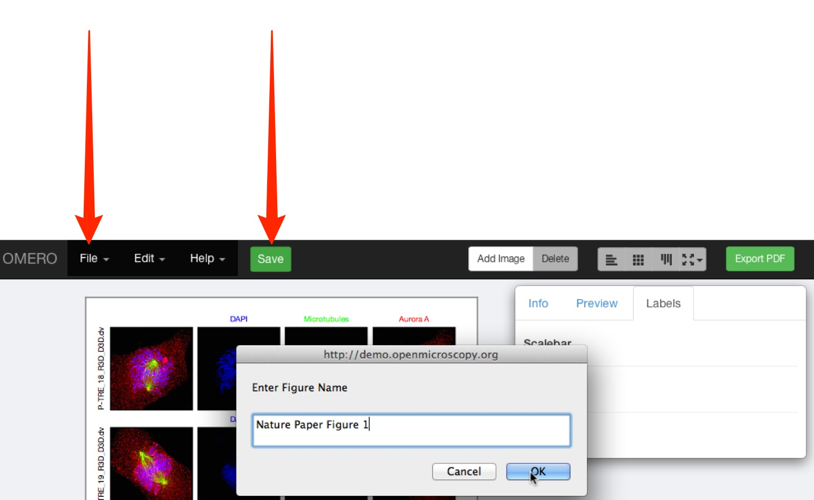
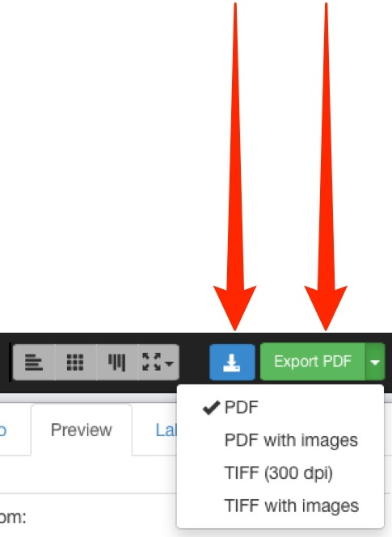

Log into your OMERO.web client.
Select the images you wish to use.
Click on the Link button.
Copy the URL from the box.
This can be done with individual or multiple-selection images,
or copy down the ID numbers of the images manually.
Select Figure from the toolbar at the top, or use the URL provided by your OMERO administrator.
Select Create New File.
Paste in the copied URL or enter ID numbers manually.
Click Add Images.
Each image selected will appear on the canvas in a panel.
These panels can then be moved, rearranged, copied, pasted and resized.
The images in the panels can be zoomed, panned, labelled and scale bars added.
Zoom in or out of the canvas using the slider at the bottom of the window.
If you want to add more images go back to OMERO.web, copy more image IDs or links, then return to Figure and click Add Images in the tool bar.
To open OMERO.web in a new tab, shift-click on OMERO.
Click on the File drop-down menu to change the size of the canvas.
Select Paper Setup ....
Select the size and orientation of your canvas.
Image panels on the canvas can be selected individually or multi-selected.
Copy and paste the panels to form rows or columns of the same images.
Use the Edit menu or standard keyboard shortcuts to Undo, Redo, Copy and Paste.
Use the layout buttons on the right to resize or align evenly.
Tooltips show the function for each button.
With one or more panels selected, the rendering settings can be adjusted in the Preview tab just as they are in the OMERO clients.

Note
If you select more than one image and they do not have the same number of channels, Z sections or time points, those controls will be greyed-out in the Preview tab.
If you select two or more images that have different settings, for example, different channels switched on and off, different zoom levels, or pan locations, then these can be resynchronised by changing the setting while they are selected.
Panels can be zoomed, panned by clicking-and-dragging, and the image rotated.
Click on the Projection icon to display the image as a maximum intensity view.
The range of Z sections included in the projection is displayed below the slider.
Increment or decrement the Z sections to shift the range of sections included in the projection.
Expand the Z section range using the drag handles on the slider.
Click on the Labels tab to add a scale bar and add or edit labels for panels.
The drop-down menu enables you to use dataset or image name or metadata fields to automatically add labels and colours.
Label text can also be typed into the box.
When text, font size, positioning and colour have been selected, click Add.
You can change the text or setting on a label at any stage, or delete the label.
To make a time sequence, set the desired time point for each image using the T slider.
With all the images selected, choose a Time option from the label drop down menu.
Set font size, placement and colour.
Incrementing or decrementing T with more than one image selected will maintain the pre-set intervals between the images.

To add a new row of panels, with another image but the same settings as an existing row, select all panels in the row, copy and paste the row and align as appropriate.
Select the pasted row and in the Info tab, click Edit ID.
Copy and paste or enter the ID of the image in the text box.
Click Preview to check that the new image is compatible with the settings.
If matching is compatible, click Update.
Click Show to add a scalebar to selected images.
The scalebar is automatically calculated from the pixel sizes.
If the image does not have pixel sizes in its metadata, you must manually set this before you can add a scale bar.
Adjust the length, position and colour of the scalebar using the text box and drop-down options.
As you zoom in on images, scalebars may extend outside the panel.
If this occurs use the Scalebar dimension box to adjust the length of the bar shown.
Click Save to save your figure on the OMERO database.
Use the File menu to open any previously saved figures.
Once you have saved the figure, the file can be shared with other users in your collaborative group via the URL in the browser address box.
Click Export PDF to create an fully editable vector-based PDF of your figure.
The PDF created is added to the images used in the figure as an attachment.
As the elements of the figure are saved as vector graphics, the PDF can be downloaded and further refined in your usual image editing app.